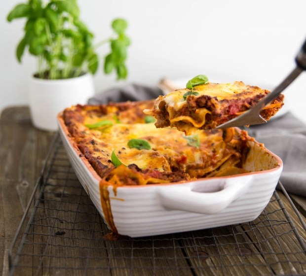

Lasagne

Desciption
A classic family dinner. Minimal prep makes this a great dish for those cold winter nights.
Consider making two batches and throwing one in the freezer for another day
Ingredients
Meat Sauce:
- 2 Tbsp oil
- 1 onion, chopped
- 3 cloves garlic, crushed
- 500g lean beef mince
- 100g mushrooms, sliced
- 2 × 400g cans tomatoes in juice, chopped
- 1 cup tomato purée
- 1 tsp oregano
- ½ tsp basil
- 1 tsp sugar
- salt
- pepper
Cheese Sauce:
- 50g butter
- 3 Tbsp flour
- 1½ cups milk
- ¾ cup grated cheese
- Salt and pepper
- 250g wide lasagne, cooked
- 2 Tbsp grated parmesan cheese
Method
- First make the meat sauce. Heat oil in a large frying pan. Add onion and garlic. Cook until onion is golden.
Increase heat. Add meat and brown well.
- Add mushrooms, tomatoes in juice, tomato purée, oregano, basil and sugar. Stir. Bring to the boil then
reduce heat and simmer gently for 40 minutes or until meat mixture has thickened slightly, stirring
occasionally.
- Season with salt and pepper to taste. Set aside until cool.
- Preheat the oven to 180˚C.
- To make the cheese sauce, melt butter in a saucepan. Add flour and cook until frothy. Gradually add milk,
stirring constantly until mixture boils and thickens.
- Remove from heat. Stir in cheese. Season with salt and pepper to taste.
- Cover with a lid or plastic wrap to prevent a skin forming. Set aside to cool slightly.
- To assemble: Place half the lasange in a greased ovenproof dish. Spread with half the meat mixture and half
the cheese sauce. Repeat the layers. Top with parmesan cheese.
- Cook for 20 minutes or until golden and heated through.